Chapter 8
GNSS-based UAV detection
Among the potential illuminators of opportunity (IO) that can be used in a passive radar (PR) aimed at unmanned aerial vehicle (UAV) monitoring, Global Navigation Satellite Systems (GNSS) represent an interesting alternative providing a global coverage opportunity, known signal structure and scalability. This chapter investigates the capabilities of a GNSS-based PR for UAV detection by looking at relevant aspects such as coverage, power budgets and processing schemes. Finally, the chapter experimentally assesses the capability of this type of system to detect UAVs.
8.1 Introduction
A PR exploits IO in order to perform radar tasks. Recently, the use of PRs for UAV monitoring has attracted significant interest in both the research and industry sectors [1–5]. A common drawback of PR solutions is that the surveillance coverage is reliant on the presence of a suitable IO; thus, it requires ad hoc system design and calibrations before deployment. To enable portability in such systems, GNSS IOs present an interesting alternative providing a global coverage opportunity, known signal structure and scalability. GNSS-based PR systems have been proposed employing either spaceborne or earth-based receivers. In [6,7], the effective use of GNSS as an IO has been demonstrated for ocean reflectometry applications. An airborne GNSS passive bistatic SAR was proposed in [8] for imaging using a synchronisation algorithm to generate the reference signal at the receiver. In a similar approach, the authors in [9,10] proposed a GNSS PR system design for maritime target detection.
A particular case of bistatic radars is the forward scattering (FS) configuration occurring when the target crosses (or is very close to) the line of sight between the illuminator and the receiver [11]. A benefit of the FS configuration is that it results in an enhancement of the radar cross section (RCS) of the target, meaning that FS radars can be particularly attractive for targets with low reflectivity, as their FS-RCS is mainly dependent on the silhouette of the target and not by its material [12,13]. Due to their particular geometry and lack of range resolution, FS radar was initially investigated for the design of electromagnetic fences [14] and their detection capabilities [15–17]. Recently, advanced signal processing techniques for target localisation and velocity estimation [18–20] and classification [21,22] have being proposed. Furthermore, their bistatic configuration makes them suitable for PR operations [23] with various illuminators such as GNSS [24–26], WiFi [27–29], GSM [30] and broadcast signals [31].
In this chapter, the concept of a GNSS-based PR for UAV detection, localisation and motion estimation is presented for both backscattering (BS) and FS configurations. Specifically, a link-budget analysis to determine the maximum detectable range using different GNSS constellations is conducted for two different case studies. An appropriate signal model and system design are provided, while target parameter estimation based on the ambiguity function (AF) is discussed for a multiple-input–single-output (MISO) configuration. Additionally, the feasibility of the system is validated through experimental acquisitions.
8.2 GNSS-based PR coverage
A PR can only operate under the presence of one or more IOs as they do not comprise dedicated transmitters. The main drawback of using such an approach is that the overall performance of the system is highly dependent on the IOs operational characteristics. In the case of GNSS, this means that the non-stationarity of the IOs needs to be taken into account. Particularly, for GNSS IOs the position and availability of illuminators shall be considered to assess the performance of the system, while the relative motion needs to be taken into account in the signal processing chain. In this section, two GNSS constellations, Global Positioning System (GPS) and Galileo, are examined in order to assess their availability and maximum detectable range that they can offer for UAV targets detection.
8.2.1 Back and forward scattering RCS of UAVs
In order to understand the expected performance of the PR, a coarse estimate of the UAV’s RCS should be available. However, the RCS will vary depending on the topology of the PR. The examined system topology is illustrated in Figure 8.1. While the depicted configuration is composed of multiple satellites, it is useful to initially examine a bistatic or single-input–single-output system comprising a single satellite IO
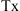
, a ground passive receiver with two channels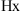
and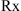
and an airborne target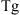
, with their distances being denoted as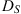
satellite to receiver,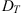
satellite to target and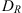
target to receiver. Initially the signal is emitted from the satellite to earth. A portion of it is directly received by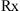
will capture the echoes from the target from different scattering directions. Specifically, based on the bistatic angle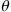
, three distinct RCS regions are distinguished: pseudo-monostatic BS at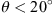
, BS at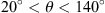
and FS at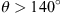
. Compared to the other RCS regions, FS does not offer target ranging; however, it can significantly increase the target’s RCS in the forward direction [11]. Considering more than one IOs results in a MISO system. In such a configuration, the receiver can utilise returns from multiple satellites with the target observed in BS or FS region depending on the considered IO.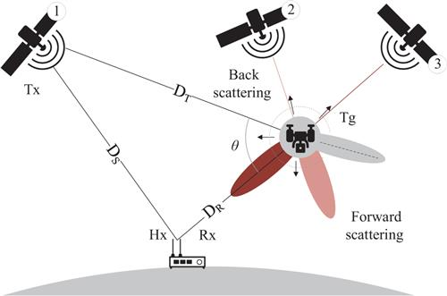
Figure 8.1 Passive GNSS radar topology comprising three satellite IOs
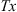
, a UAV target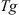
and a two-channel receiver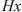
and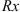
The BS–RCS for miniature UAV targets has been widely discussed in [32,33]. As the BS–RCS of such complex targets is difficult to estimate for every bistatic angle and target orientation, in this work the BS–RCS is modelled by the RCS of a sphere:
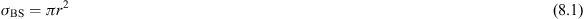
where
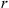
is the radius of the sphere. As shown in [33], spheres with radius close to 8 cm can well approximate the BS–RCS of a Parrot drone target at the 2.4 GHz WiFi band. An overview of the FS-RCS phenomenology is provided in [34], while its applicability for miniature UAV detection was investigated in [35]. The maximum FS-RCS in the optical region can be calculated from [36]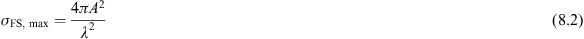
where
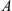
is the physical area of the target. This maximum value can only be observed if the receiver antenna falls into the FS main lobe which is centred across the line of sight between the transmitter and target facing the opposite direction from the transmitter, see Figure 8.1, while its width is proportional to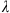
and inversely proportional to the target’s typical dimension [34]. The values of (8.1) and (8.2) are used to estimate the RCS of a miniature UAV which helps to predict the expected performance of the PR.8.2.2 Passive bistatic radar equation
In order to get a coarse estimation of the maximum operational range, an investigation on the bistatic radar equation of the system is necessary. Similar to [35], the figure of merit used is the signal-to-noise ratio (SNR), which for a single pulse is [37]
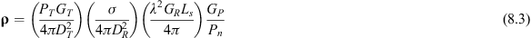
where the different parameters are described in Table 8.1 along with their typical values derived from [35,38]. It should be noted that the processing gain is calculated as the time bandwidth product of the signal, i.e.
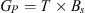
. GNSS satellites operate in a continuous waveform manner, so when referring to a single pulse, the duration of a single code sequence transmitted by the satellite is assumed. When a coherent integration of duration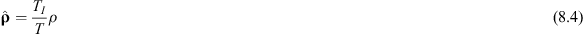
where
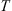
is the duration of the code used by the satellite. For the specific case of GNSS illumination, multiple satellites can be considered at the same time as IOs. However, the different satellites are expected to be widely distributed around the target; thus, coherency between the different signals is not a realistic assumption and therefore non-coherent integration shall be considered. Non-coherent integration is less effective than the coherent one and the computation of its gain is not straightforward. Generally, the square root of the coherent gain is used as a conservative assumption. Assuming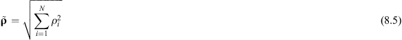
where
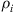
,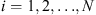
is the SNR of the target return from each satellite. The maximum detectable range for a certain set of configurations can be then obtained from (8.3):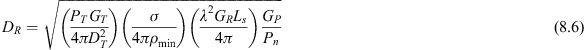
where  is the minimum SNR required for detection. Additionally, using (8.4) and (8.6) it can be shown how a wider coverage can be achieved when using coherent integration in time:
is the minimum SNR required for detection. Additionally, using (8.4) and (8.6) it can be shown how a wider coverage can be achieved when using coherent integration in time:
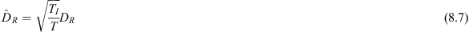
Table 8.1 Satellite link budget parameters
| Description | GPS | Galileo | ||
|---|---|---|---|---|
| Wavelength | cm | 19.03 | 19.03 | |
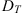 |
Satellite-to-target distance (mean) | km | 20,200 | 23,222 |
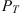 |
Transmitted power (mean) | dBW | 21.7 | 23.9 |
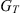 |
Transmitter gain (mean) | dBi | 14.5 | 16.5 |
| Code duration | ms | 1 | 4 | |
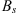 |
Code bandwidth | MHz | 1.023 | 1.023 |
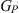 |
Signal processing gain | dB | 30.1 | 36.1 |
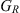 |
Receiver gain | dBi | 46 | 46 |
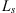 |
Losses | dB | −3 | −3 |
| Noise power | dB | −128 | −128 | |
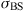 |
Target FS-RCS | dBsm | −17 | −17 |
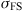 |
Target BS–RCS | dBsm | −4.65 | −4.65 |
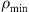 |
Minimum SNR for detection | dB | 8 | 8 |
Finally, in the case of multiple satellites’ integration, the maximum achievable range is approximated as
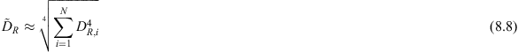
where
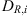
is the maximum achievable range using the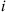
th satellite. It is worth noting that certain variables in (8.6) and (8.7) can be parametrised in the system design process, while others depend on the satellite properties and shall be considered constant. In particular, the transmitted power, gain, wavelength and processing gain have fixed values for each satellite. On the other hand, the receiver gain, integration time, number of satellites and SNR for detection can be set in the system design. The rest of the parameters, such as the target RCS and noise power are unknown or cannot be controlled.As different constellations have different processing gain and code duration, see Table 8.1, these parameters need to be considered in the integration time selection as from (8.5) it can be shown that Galileo offers lower gain than GPS for the same
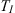
because of its longer pulse duration. This lower integration gain however is compensated by the higher processing gain Galileo’s longer codes offer.8.2.3 Case studies
In order to provide an idea of the coverage that a GNSS-based PR could provide, in this section two case studies are presented and the link budget model described in Section 8.2.2 is applied to approximate the maximum distance that a miniature UAV target can be detected.
The GNSS coverage depends on the receiver’s geographic position and will also vary during different parts of the day; hence, the analysis is carried out throughout a 24-h period. Table 8.1 summarises the parameters used in the presented analysis, while the power of individual satellites is obtained from [38]. The satellite position model is based on the orbit computation method described in [39]. The method follows a modified version of the SGP4 model applied for standard satellite orbit computation using two-line elements (TLE). The position of each satellite is calculated for the full day (midnight to midnight) at 16/06/2019 based on the TLE files with the same epoch date.
8.2.3.1 Case Study I: Heathrow Airport
Heathrow Airport, Longford TW6, London, the United Kingdom is selected as the first case study. The PR receiver is located at 51.4700°N, 0.4543°W for latitude and longitude, respectively, while the height is set at 25 m above sea level. The first analysis performed considers single illuminators only. The maximum detectable range achieved by each satellite, as calculated from (8.7) using BS–RCS and coherent integration of
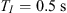
, is shown in Figure 8.2. Figure 8.2(a) and (b) shows the maximum detectable range throughout 1 day for each satellite in the GPS and Galileo constellations, respectively. Moreover, the last row indexed as ‘Max’ shows the range when the satellite offering the maximum range in that instant of the day is selected. Also, zero range shown in grey colour indicates no satellite visibility. From the results, it can be seen that Galileo can provide longer detectable ranges; however, these are less consistent throughout the day when compared with the GPS illumination.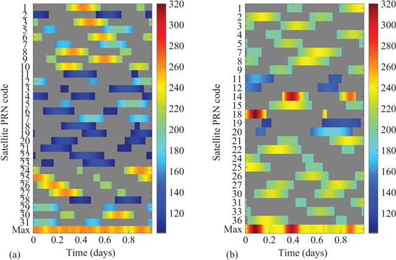
Figure 8.2 Case Study I: maximum detectable range (m) achieved in BS configuration using one satellite for detection: (a) GPS and (b) Galileo
The next considered case is when multiple illuminators are integrated at the same time, thus using (8.8) for all the visible illuminators at a specific time instant, the results in Figure 8.3 are obtained. From the figure, it can be seen that the maximum achievable range after integrating multiple signal is significantly longer than what individual satellites offer. Moreover, the Galileo constellation offer higher detectable range for most of the day fluctuating between 330 and 410 m for
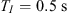
, see left axis in Figure 8.3. Additionally, integrating all visible satellites from both constellations, significantly higher maximum detectable range varying from 390 up to 470 m is achieved. These results can be further improved by increasing the integration time. As it can be seen from the right axis in Figure 8.3, the maximum detectable ranges of 580 m for Galileo and 660 m for combined constellations are achieved.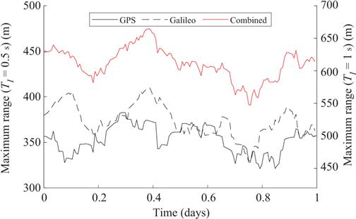
Figure 8.3 Case Study I: maximum detectable range achieved in BS configuration using all the visible satellites in different constellations and a combination of both; left axis for integration time
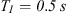
and right axis forIn order to assess the FS performance, only a subset of the illuminators should be considered. Indeed, as discussed in Section 8.2.1, the FS-RCS only occurs when the target is close to the baseline between the satellite illuminator and the ground receiver. For this reason, we assume that the receiver is pointing West and only satellites positioned West of the airport, particularly between 160° and 200° azimuth angle and between 5° and 50° elevation angle in topocentric coordinates system (TCS), are considered. In Figure 8.4, the maximum detectable range achieved from each satellite in different constellations is shown using an integration time of . Notice that  is significantly smaller when is considered due to the more restrictive topology. As seen in Figure 8.4, the coverage in terms of time is significantly less dense compared to the BS in Figure 8.2. On the contrary, the detectable range is longer, even if the integration time is shorter, which is due to the FS-RCS being significantly higher than BS–RCS. As it can be seen, GPS offers longer ranges compared to the Galileo while also being less sparse. In particular, the GPS will have non-zero range for 79.2% of the day compared to Galileo 51.4%.
is significantly smaller when is considered due to the more restrictive topology. As seen in Figure 8.4, the coverage in terms of time is significantly less dense compared to the BS in Figure 8.2. On the contrary, the detectable range is longer, even if the integration time is shorter, which is due to the FS-RCS being significantly higher than BS–RCS. As it can be seen, GPS offers longer ranges compared to the Galileo while also being less sparse. In particular, the GPS will have non-zero range for 79.2% of the day compared to Galileo 51.4%.
Figure 8.4 Case Study I: maximum detectable range (m) achieved in FS configuration using one satellite for detection: (a) GPS and (b) Galileo
8.2.3.2 Case Study II: Newark Liberty International Airport
The second case study is the Newark Liberty International Airport, NJ 07114, the United States, located at 40.6895°N, 74.1745°W for latitude and longitude, respectively, with the height of the radar receiver being set at 25 m above sea level. Similar to Case Study I, the maximum detectable ranges achieved by individual satellites and by integrating different signals are shown in Figures 8.5 and 8.6, respectively. Comparing the respective results in Case Studies I and II, it can be seen that the satellite availability profiles appear different. This is expected as the receiver in the Case Study II is placed at different geographical location than Case Study I. Moreover, comparing Figure 8.2 with Figure 8.5 it can be seen that the maximum range of the individual satellites is similar for both the case studies. Furthermore, comparing Figure 8.3 with Figure 8.6, it can be seen that for the Case Study II the maximum detection ranges have generally lower values.
Figure 8.5 Case Study II: maximum detectable range (m) achieved in BS configuration using one satellite for detection: (a) GPS and (b) Galileo
Figure 8.6 Case Study II: maximum detectable range achieved in BS configuration using all the visible satellites in different constellations and a combination of both; left axis for integration time and right axis for
To examine the FS-RCS, only satellites positioned South of the airport, particularly between 240° and 280° azimuth angle and between 5° and 50° elevation angle in TCS, are considered. In Figure 8.7, the maximum detectable range is shown to be achieved from each satellite using an integration time of . Comparing Figure 8.7 with Figure 8.4, it can be seen that available satellites are much more sparse in Case Study II than Case Study I. In particular, GPS and Galileo will have non-zero range for 48.6% and 52.8% of the day, respectively, suggesting that a South-facing FS radar would not be particularly effective.
Figure 8.7 Case Study II: maximum detectable range (m) achieved in FS configuration (South) using one satellite for detection: (a) GPS and (b) Galileo
For a better comparison between the two different geographic positions, Case Study II is also examined only for satellites appearing in the West direction, with the same azimuth and elevation restrictions as in Case Study I. From Figure 8.8, it can be seen that the coverage has been significantly improved for the GPS and slightly reduced for Galileo giving non-zero ranges for 68.7% and 47.9%, respectively. Additionally, the maximum detectable range for Galileo is generally lower compared to when only satellites from the South direction are used.
Figure 8.8 Case Study II: maximum detectable range (m) achieved in FS configuration (West) using one satellite for detection: (a) GPS and (b) Galileo
Considering both case studies, it can be seen that while the FS configuration can offer significantly higher detectable ranges when individual satellites are considered, the low availability of satellites in the desired configuration makes it of difficult realisation. On the contrary, while BS configurations offer lower maximum range for individual satellites, the availability of the satellites is much higher allowing for multiple reflections to be integrated. Indeed, non-coherent integration of multiple satellites in BS can offer similar maximum ranges to the FS configuration, while if longer coherent integration in time, not available in FS, is considered the resulting ranges can be even higher. A combination of both configurations using two processing streams, one for BS which can stay always on-line and one for FS operating when available satellites are present, would be the most advantageous approach in terms of detection performance. Furthermore, integration of other available GNSS systems could further improve the maximum detectable range and availability.
8.3 Source signal reconstruction
A fundamental requirement of a PR is the knowledge of the signals transmitted by the IOs, in order to apply time difference of arrival (TDOA) and allow for the estimation of the bistatic range as well as improved SNR. In this section, the appropriate signal model and reconstruction algorithm for the GNSS-based PR are introduced.
8.3.1 Signal model
The generic form of a GNSS signal transmitted by the  th satellite can be written as [8]
th satellite can be written as [8]
where  denotes the carrier frequency, is Pseudorandom Noise (PRN) code sequence and
denotes the carrier frequency, is Pseudorandom Noise (PRN) code sequence and  is navigation message. The component
is navigation message. The component  in (8.9) is generated by repeating a binary phase shift keying (BPSK)-modulated sequence composed of chips, each of which has duration equal to . Furthermore, the information carried by is also coded using a BPSK modulation, with a symbol duration which is significantly longer than
in (8.9) is generated by repeating a binary phase shift keying (BPSK)-modulated sequence composed of chips, each of which has duration equal to . Furthermore, the information carried by is also coded using a BPSK modulation, with a symbol duration which is significantly longer than  , i.e. . Since the PRN code used by each satellite is known by the receiver, as it is used for the detection of the signal, it is useful to define its duration as the pulse repetition interval (PRI) of the transmitter which equals . Based on this PRI, fast-time is defined as the time between the beginning and the end of each PRI, i.e. , while intervals of a PRI, i.e. are referred to as slow-time where is the number of received PRIs. Without loss of generality, the transmitter–receiver channel can be assumed to be stationary in fast-time, while changing in slow-time. The direct path signal from the
, i.e. . Since the PRN code used by each satellite is known by the receiver, as it is used for the detection of the signal, it is useful to define its duration as the pulse repetition interval (PRI) of the transmitter which equals . Based on this PRI, fast-time is defined as the time between the beginning and the end of each PRI, i.e. , while intervals of a PRI, i.e. are referred to as slow-time where is the number of received PRIs. Without loss of generality, the transmitter–receiver channel can be assumed to be stationary in fast-time, while changing in slow-time. The direct path signal from the  th GNSS satellite at the passive receiver, after removing the carrier frequency, can be expressed as [35]
th GNSS satellite at the passive receiver, after removing the carrier frequency, can be expressed as [35]
where and are the signal’s frequency and phase shifts, respectively, caused by the distance and relative velocity between the satellite and the receiver, and is a phase error caused by non-free-space propagation phenomena as well as hardware imperfections. Notice that since the channel varies in slow-time, the delay, frequency shift and phase error are modelled in slow-time. Furthermore, the different components are given as
where  is signal’s delay.
is signal’s delay.
According to (8.10), the signal reflected by the target can be written as
where  and are the frequency shift and phase error that the signal experiences in the satellite–target–receiver path. The parameters , and can be calculated using (8.11), (8.12) and (8.13), respectively, by replacing with and with which is the delay the signal experiences in the transmitter–target–receiver path.
and are the frequency shift and phase error that the signal experiences in the satellite–target–receiver path. The parameters , and can be calculated using (8.11), (8.12) and (8.13), respectively, by replacing with and with which is the delay the signal experiences in the transmitter–target–receiver path.
8.3.2 GNSS signal characteristics
In this section, the AF of the GNSS waveform is investigated. Here the AF definition introduced in [40] is used where  is the output of the matched filter when the input signal, PRN code in this case, experiences a delay and frequency shifted relative to the nominal values for which the matched filter is designed. In Figure 8.9(a), the AF of the space vehicle number (SVN) 1 GPS satellite signal is shown, overlaid by the zero-Doppler and zero-delay cuts. It should be noted that all the codes in one constellation exhibit similar AF and therefore examining only one example is sufficient for the current analysis. In Figure 8.9(b), the AF of the SVN 1 Galileo satellite signal is shown. Comparing Figure 8.9(a) and (b), it can be observed that both signals offer a ‘thumbtack’-shaped AF with high response around the centre and low values elsewhere. This is a characteristic generally well accepted by radar waveform designers as it provides proper localisation of the target and low ambiguities. Furthermore, the Galileo AF shows a finer Doppler resolution due to the longer duration of the waveform. The AF parameters of the examined signals are summarised in Table 8.2. This table provides a comparison between the waveforms of the two constellations. In particular, the pulse repetition frequency of the GPS signal is 1 kHz, while for Galileo this value drops by a factor of 4 due to its longer duration. As a consequence, GPS has a larger unambiguous Doppler range than Galileo. While the measured Doppler will depend on the geometry of the transmitter–receiver–target system [23], to place these numbers into perspective it will assume the case where the satellite is behind the receiver and the target is moving straight towards them. The experienced Doppler in this case is maximum and is given by
is the output of the matched filter when the input signal, PRN code in this case, experiences a delay and frequency shifted relative to the nominal values for which the matched filter is designed. In Figure 8.9(a), the AF of the space vehicle number (SVN) 1 GPS satellite signal is shown, overlaid by the zero-Doppler and zero-delay cuts. It should be noted that all the codes in one constellation exhibit similar AF and therefore examining only one example is sufficient for the current analysis. In Figure 8.9(b), the AF of the SVN 1 Galileo satellite signal is shown. Comparing Figure 8.9(a) and (b), it can be observed that both signals offer a ‘thumbtack’-shaped AF with high response around the centre and low values elsewhere. This is a characteristic generally well accepted by radar waveform designers as it provides proper localisation of the target and low ambiguities. Furthermore, the Galileo AF shows a finer Doppler resolution due to the longer duration of the waveform. The AF parameters of the examined signals are summarised in Table 8.2. This table provides a comparison between the waveforms of the two constellations. In particular, the pulse repetition frequency of the GPS signal is 1 kHz, while for Galileo this value drops by a factor of 4 due to its longer duration. As a consequence, GPS has a larger unambiguous Doppler range than Galileo. While the measured Doppler will depend on the geometry of the transmitter–receiver–target system [23], to place these numbers into perspective it will assume the case where the satellite is behind the receiver and the target is moving straight towards them. The experienced Doppler in this case is maximum and is given by
with representing the target radial velocity, thus for the measured Doppler is 315 Hz. This means that Galileo might exhibit Doppler ambiguities in such a configuration. Lastly, the GPS and Galileo satellites offer the same range resolution, due to the same bandwidth of their pulses.
Figure 8.9 Example AF of (a) GPS and (b) Galileo code signal
Table 8.2 Radar parameters
| Description | GPS | Galileo | ||
|---|---|---|---|---|
| PRF | Pulse repetition frequency | Hz | 1,000 | 250 |
| Maximum unambiguous Doppler | Hz | 500 | 125 | |
| ΔD | Range resolution | m | 146.5 | 146.5 |
8.3.3 Signal reconstruction algorithm
The approach proposed in [8] for synchronisation is selected in order to perform the signal reconstruction algorithm. The basic operations of the synchronisation approach are depicted in Figure 8.10. The system utilises two channels: a reference channel used to capture the direct signals form the available satellites and a surveillance channel that captures the target’s reflections. The input from the reference channel is passed through a standard GNSS receiver chain where the signals from different satellites are first detected by correlating the reference channel signal with different PRN sequences. This process is commonly referred to as signal acquisition and provides initial estimations regarding the code delay and Doppler shift of the signal. This information is later passed to a PRN code tracker which provides a finer and continuous estimation of the signal delay, Doppler and phase parameters. At this stage, the estimated parameters can be used to reconstruct noise-free reference signals from the different IOs that can be then correlated with the surveillance signal in order to perform TDOA and target detection. The whole procedure can be formalised as follows by using the signal model derived in Section 8.3.1. The signal at the reference and surveillance channels can be expressed as
where , represent the power losses in the reference channel owing to the satellite–receiver and satellite–target–receiver paths, and and are the respective losses in the surveillance channel. If is satisfied, the tracker can provide an estimate of the delay , frequency shift and phase shift that the signal experiences in the satellite–receiver path. Additionally, the tracker outputs an estimate of the navigation signal containing binary phase information. Using these estimates, the signal from the  th satellite can be reconstructed as
th satellite can be reconstructed as
where is time-shifted PRN code. Following the reconstruction of all the satellite signals in (8.18), these can be used to filter the signal from the surveillance channel. By design, the signals transmitted from different satellites are quasi-orthogonal, thus the cross-correlation between the reconstructed signal (8.18) and the surveillance channel (8.17) can be expressed as
where denotes the complex conjugate operation, and  , , are the correlation output components associated with the direct signal, target returns and noise, respectively. For an accurate reconstruction of the signal, and if the phase error in both channels is approximately the same, i.e. , and
, , are the correlation output components associated with the direct signal, target returns and noise, respectively. For an accurate reconstruction of the signal, and if the phase error in both channels is approximately the same, i.e. , and  can be expressed as [35]
can be expressed as [35]
where is AF as described in Section 8.3.2, and represent the bistatic delay and Doppler shift, respectively. From (8.20) and (8.21), it can be seen that the output from the filtered signal comprises two main components: one at zero-delay and zero-Doppler and one at and . If or , it is therefore possible to estimate the target’s range and velocity after filtering the direct signal component. In the literature, various direct signal suppression techniques have been proposed and the reader is referred to [23,41,42] for further discussion.
Figure 8.10 Signal reconstruction algorithm
8.4 Target parameters estimation
Following the TDOA processing, target detection is possible, and equally importantly, position and target motion parameters can be estimated. In this section, the target localisation problem is dealt with by employing a MISO AF approach. This allows the use of the return from multiple satellites and exploits their spatial diversity. It should be noted that the proposed approach addresses only BS returns as TDOA cannot be observed in FS. Target parameter estimation methods suitable for FS have been proposed in literature [18,19]; however, those cannot be directly implemented in the proposed AF approach but could be combined in an information fusion framework. An alternative approach combining matched filter outputs for BS and the first Fresnel zone for FS responses was proposed in [43] assuming a binary ambiguity for the target.
8.4.1 Target localisation
Assuming the acquisition of one PRI in the presence of a target, we define as the vector containing the discrete samples of one PRN code transmitted by the  th satellite, reflected by the target and captured at the receiver. The total received signal can be defined as
th satellite, reflected by the target and captured at the receiver. The total received signal can be defined as
where is the number of available satellites and n is additive white Gaussian noise. Assuming that the target introduces negligible Doppler shift in fast-time, i.e. the target motion is modelled as phase shifts in slow-time, the non-coherent MISO AF of the received signal is defined as
where ,  and are the spatial parameters in an X–Y–Z three-dimensional space, is the expected signal from a target in the coordinates associated with the
and are the spatial parameters in an X–Y–Z three-dimensional space, is the expected signal from a target in the coordinates associated with the  th satellite, and is complex conjugate operation. It is worth mentioning that here a perfect reconstruction of the satellite signal is assumed, meaning that delay and Doppler shifts due to the satellite position and motion are accounted in . Examining (8.23), it can be easily seen that the MISO AF is defined as the non-coherent sum of the AFs for the different satellite signals , i.e.
th satellite, and is complex conjugate operation. It is worth mentioning that here a perfect reconstruction of the satellite signal is assumed, meaning that delay and Doppler shifts due to the satellite position and motion are accounted in . Examining (8.23), it can be easily seen that the MISO AF is defined as the non-coherent sum of the AFs for the different satellite signals , i.e.
While coherent summation of the different AFs could theoretically provide superior results, as mentioned in Section 8.2.2, since coherency between the different satellite signals might not be achievable in most cases, non-coherent integration is adopted in this study.
For a better understanding of the system’s behaviour, consider the following simplified example. Assume a source placed at the Heathrow airport and the configuration of the available GPS satellites shown in Figure 8.11, where the satellites’ coordinates have been scaled down by a factor of 105 for better illustration. A target is placed within the surveillance area with the received signal being modelled based on Section 8.1.3 with the reference signal assumed to be perfectly reconstructed. To calculate the reflected target’s power received from each satellite, (8.3) is used by replacing with 1. Furthermore, no noise is assumed, while the in-between sample delays are modelled using fractional delay by linear interpolation [44]. In Figure 8.9, the X–Y cross sections of the MISO AF is show for and the target placed at different positions. Each MISO AF is normalised by its maximum value and the resolution bin step in all dimensions is 10 m starting form −500 up to 500 m in  and axes and 0–250 m in . As it can be seen the response of the MISO AF is highly dependent on the target’s position. Specifically, when the target is placed away from the receiver, see Figure 8.12(a) and (c), the response appears similar to a circle arc, while when placed on top of the receiver the response assumes a more symmetric shape. Furthermore, when there is a mismatch in height between the actual target position and the AF cut, see Figure 8.12(d), the response has lower intensity.
and axes and 0–250 m in . As it can be seen the response of the MISO AF is highly dependent on the target’s position. Specifically, when the target is placed away from the receiver, see Figure 8.12(a) and (c), the response appears similar to a circle arc, while when placed on top of the receiver the response assumes a more symmetric shape. Furthermore, when there is a mismatch in height between the actual target position and the AF cut, see Figure 8.12(d), the response has lower intensity.
Figure 8.11 Examined geometry with the receiver placed at (0, 0, 0), the coordinates of each satellite being scaled down and the target denoted by the red dot
Figure 8.12 MISO AF cross section at for different target position and the receiver and satellites topology shown in Figure 8.11: (a) (250;0;20), (b) (0;0;20), (c) (−250;−250;20), (d) (−250;−250;250)
The MISO AF of the target when placed at (250, 0, 20) at different hours of the day is shown in Figure 8.13. It can be seen, that throughout the day the response changes due to the different satellites’ position. It is also worth noting that the spatial resolution in the radial direction is not constant and higher than the one described in Table 8.2. This is caused by the bistatic resolution in the different AFs varying based on the respective bistatic angle  . In summary, the MISO AF processing performance, including which satellite to use at a given time of the day, would need to be analysed on a case by case basis depending on the receiver positioning.
. In summary, the MISO AF processing performance, including which satellite to use at a given time of the day, would need to be analysed on a case by case basis depending on the receiver positioning.
Figure 8.13 MISO AF cross section at for the target placed at () at different hours of the day: (a) 00.00, (b) 06.00, (c) 12.00, (d) 18.00
8.4.2 Velocity estimation
As the target’s Doppler is translated in different phase shifts observed in slow-time, the formula of MISO AFs derived in (8.24) is not sufficient in order to estimate the target’s velocity. In monostatic and bistatic configurations, the Doppler processing usually involves a Fourier transform across the slow-time samples of each fast-time bin. As in MISO, the Doppler experienced from different transmitter–receiver pairs cannot be converted to velocity along the same axis, a different approach needs to be pursued. Similarly to the location estimation, the velocity is estimated along all three X–Y–Z axes and by extending (8.24) under the assumption of slow-time processing results in
where , and denote the velocity along the three axes, is the starting slow-time sample of the examined interval, is the number of slow-time samples composing a coherent time interval (CPI), is the index of the slow-time samples, and is the expected bistatic Doppler in the  th satellite signal divided by the PRF. To better understand the process, the scenario described in Figure 8.11 is assumed with the target located at (250, 0, 20) and with velocity only in the
th satellite signal divided by the PRF. To better understand the process, the scenario described in Figure 8.11 is assumed with the target located at (250, 0, 20) and with velocity only in the  direction . In Figure 8.14, the MISO AF cut described in (8.25) at the location of the target and for is shown for a CPI of 0.1 s. Under closer inspection, it can be noted that the MIMO AF comprises different iso-Doppler lines deriving from the AFs of the different IOs, with a peak at the estimate target’s velocity.
direction . In Figure 8.14, the MISO AF cut described in (8.25) at the location of the target and for is shown for a CPI of 0.1 s. Under closer inspection, it can be noted that the MIMO AF comprises different iso-Doppler lines deriving from the AFs of the different IOs, with a peak at the estimate target’s velocity.
Figure 8.14 MISO AF cross section at the position of the target (250,0,20) and for for a target with velocity only on the -axis
8.5 Experimental analysis
To validate the system in real conditions, an experimental campaign was held in the Caplaw Model Flying Club, Johnstone, Scotland. The target used was the DJI Phantom 4 drone, while the area and the satellites’ positions are shown in Figure 8.15 with the tracked satellites shown in green colour and blue indicating the antenna beam. The mission comprises two main target motions: crossings in front of the receiver as illustrated in Figure 8.16(a) and descending away from the receiver illustrated in Figure 8.16(b). In each acquisition, the time of the recording and the location of the receiver and the satellites were extracted from the captured GPS signal.
Figure 8.15 Testing area and satellite position at the beginning of the acquisition [45]
Figure 8.16 Target flight path and different ground range indicators from the receiver position [45]: (a) Scenario 1 and (b) Scenario 2
8.5.1 Scenario 1: crossing in front of the receiver
The target route in Scenario 1 is shown in Figure 8.16(a). The distance of the target form the receiver during the crossing was approximately 10 m. In Figure 8.17, the range–Doppler maps generated from the returns of satellite PRN 25 are shown for one of the crossings. The CPI used was 0.5 s providing a frequency resolution of 2 Hz. Moreover, in order to remove stationary clutter, the mean of the slow-time signal is subtracted from all range bins. As it can be seen, the target initially appears with a positive frequency, passes from 0 and then goes to negative. This is expected as the decrease in frequency reflects the approaching and receding behaviour of the drone. Additionally, since the satellite is in the FS geometry the Doppler will be 0 when the target crosses the baseline. To better illustrate the target’s behaviour, the spectrograms generated using the first range bin of four available satellites are shown in Figure 8.18. As it can be seen for PRN 25, the same behaviour show in Figure 8.17 is apparent for five crossings. Investigating the returns of the different satellites, it can be seen that the target appears in different Doppler shifts due to the different bistatic angles. Additionally, it is noticed that the noise floor on the different spectrograms significantly varies with PRN 25 and 10 (see Figure 8.18(a) and (b)) offering better SNR than PRN 32 and 24 (see Figure 8.18(c) and (d)).
Figure 8.17 Range–Doppler maps (a) right before and (b) after the target crosses the receiver’s beam centre; , PRN 25
Figure 8.18 Spectrograms generated by filtering the received signal using the signal from GPS satellites: (a) PRN 25, (b) PRN 10, (c) PRN 32, (d) PRN 24, while the target crosses the antenna beam five times
To combine the signals from five available satellites, the non-coherent MIMO AF approach is applied. The examined area is from −500 to 500 m in the and  axes centred at the location of the receiver and height . Moreover, the examined grid in the plane has a step of 10 m. To remove the clutter and improve the SNR, a bandpass filter is applied with cut-off frequencies of 2 and 100 Hz in all spatial resolution cells for each satellite. Additionally, to apply non-coherent integration in time a moving mean of 0.2 s window is applied on the time domain of each spatial cell for each satellite separately. In Figure 8.19, the MIMO AF is shown in the absence and presence of the target. All the values have been normalised by the maximum value of the MIMO AF from the beginning of the recording up to the first crossing. As it can be seen, the presence of the target is indicated by a distinguishable lobe. The peak of the lobe appears at and , giving a detection distance at 15 m from the receiver.
axes centred at the location of the receiver and height . Moreover, the examined grid in the plane has a step of 10 m. To remove the clutter and improve the SNR, a bandpass filter is applied with cut-off frequencies of 2 and 100 Hz in all spatial resolution cells for each satellite. Additionally, to apply non-coherent integration in time a moving mean of 0.2 s window is applied on the time domain of each spatial cell for each satellite separately. In Figure 8.19, the MIMO AF is shown in the absence and presence of the target. All the values have been normalised by the maximum value of the MIMO AF from the beginning of the recording up to the first crossing. As it can be seen, the presence of the target is indicated by a distinguishable lobe. The peak of the lobe appears at and , giving a detection distance at 15 m from the receiver.
Figure 8.19 Non-coherent MIMO AF (a) target absent (b) target present. AF generated combining five available satellites: PRN 25, 10, 32, 24, 10
8.5.2 Scenario 2: descending away from the receiver
To examine the second motion of the target (see Figure 8.16(b)), the range–Doppler map generated for satellite PRN 25 is shown in Figure 8.20 using a CPI of 0.5 s. As it can be seen the target appears in lower negative frequency as it moves away from the receiver. For better illustration, the spectrograms generated from four available satellites are shown in Figure 8.21. Similar to the crossing motion in Figure 8.18, the Doppler profile of the target appears in different frequency shifts due to the unique bistatic configuration of each receiver–satellite pair. It should be noted that in this case, the target is not visible in the PRN 10 returns. This can be due to high interference/losses in the satellite–target–receiver channel or poor signal reconstruction. Moreover, the noise floor for the different satellite returns follow the same trend as in Figure 8.18.
Figure 8.20 Range–Doppler maps (a) right before and (b) after the target crosses the receivers beam centre; , PRN 25
Figure 8.21 Spectrogram generated by filtering the received signal using the signal from GPS satellites: (a) PRN 25, (b) PRN 10, (c) PRN 32, (d) PRN 24, while the target descending away from the antenna beam
To integrate the returns from multiple satellites, the non-coherent MIMO AF is used similarly to Scenario 1. In Figure 8.22, the MIMO AF generated using five available satellites is shown before and after the target enters the scene. Similar to Scenario 1, the target can be indicated by a rise in intensity at the location of the target. The maximum is observed at and ; however, the target is still visible when located at and giving a maximum value of 0.35 and range 28 m. For comparison, the results when using only one satellite are illustrated in Figure 8.23. As it can be seen, when one satellite is used the AF is characterised with iso-range ellipses. Comparing Figures 8.22(b) and 8.23(b), it is noted that using multiple satellites offers better target localisation capabilities.
Figure 8.22 Non-coherent MIMO AF (a) target absent (b) target present. AF generated combining five available satellites: PRN 25, 10, 32, 24, 10
Figure 8.23 Non-coherent MIMO AF (a) target absent (b) target present. AF generated using PRN 25 satellite
8.6 Conclusion
The chapter presented a feasibility study of UAV monitoring using GNSS-based PR systems. In particular, an estimate of the maximum detectable range for small UAV targets was investigated along with the availability of illuminators under BS and FS assumptions. Using two different case studies, it was shown that Galileo satellites can offer higher maximum ranges compared to GPS. Additionally, using all the satellites in one constellation guarantees persistent 24-h availability in BS configuration, while using all the available satellites offers longer detectable ranges. Examining the FS performance for certain orientations, it was demonstrated that while FS-RCS can offer longer maximum detectable range than BS–RCS, the availability of the satellites in FS configuration is quite sparse. The design of the proposed system was derived, describing the appropriate signal model and signal reconstruction algorithm necessary to perform correlation operations. Furthermore, in order to estimate the target’s location and velocity a MISO approach using non-coherent integration of different satellite returns was proposed. The behaviour of the MISO AF was investigated under different target positions and part of the day scenarios. Lastly, experimental results demonstrate that such a system and processing approach facilitates UAV detection.
References
[1] Chadwick AD. Micro-drone detection using software-defined 3G passive radar. In: International Conference on Radar Systems (Radar 2017); 2017. p. 1–6.
[2] Jarabo-Amores MP, Mata-Moya D, Gomez-del-Hoyo PJ, et al. Drone detection feasibility with passive radars. In: 2018 15th European Radar Conference (EuRAD); 2018. p. 313–316.
[3] Liu Y, Wan X, Tang H, et al. Digital television based passive bistatic radar system for drone detection. In: 2017 IEEE Radar Conference (RadarConf); 2017. p. 1493–1497.
[4] Schüpbach C, Patry C, Maasdorp F, et al. Micro-UAV detection using DAB-based passive radar. In: 2017 IEEE Radar Conference (RadarConf); 2017. p. 1037–1040.
[5] Knoedler B, Zemmari R, and Koch W. On the detection of small UAV using a GSM passive coherent location system. In: 2016 17th International Radar Symposium (IRS); 2016. p. 1–4.
[6] Addabbo P, Giangregorio G, Galdi C, et al. Simulation of TechDemoSat-1 delay-Doppler maps for GPS ocean reflectometry. IEEE Journal of Selected Topics in Applied Earth Observations and Remote Sensing. 2017;10(9):4256–4268.
[7] Ullo SL, Giangregorio G, di Bisceglie M, et al. Analysis of GPS signals backscattered from a target on the sea surface. In: 2017 IEEE International Geoscience and Remote Sensing Symposium (IGARSS); 2017. p. 2062–2065.
[8] Antoniou M and Cherniakov M. GNSS-based bistatic SAR: a signal processing view. EURASIP Journal on Advances in Signal Processing. 2013;2013(1):98.
[9] Ma H, Antoniou M, Cherniakov M, et al. Maritime target detection using GNSS-based radar: experimental proof of concept. In: 2017 IEEE Radar Conference (RadarConf); 2017. p. 0464–0469.
[10] Beltramonte T, Braca P, Bisceglie MD, et al. Simulation-based feasibility analysis of ship detection using GNSS-R delay-Doppler maps. IEEE Journal of Selected Topics in Applied Earth Observations and Remote Sensing. 2020;13:1385–1399.
[11] Willis NJ. Bistatic Radar. vol. 2. SciTech Publishing, London; 2005.
[12] Hiatt RE, Siegel KM, and Weil H. Forward scattering by coated objects illuminated by short wavelength radar. Proceedings of the IRE. 1960;48(9):1630–1635.
[13] Glaser JI. Bistatic RCS of complex objects near forward scatter. IEEE Transactions on Aerospace and Electronic Systems. 1985;AES-21(1):70–78.
[14] Glaser JI. Forward scatter radar for future systems. WSTIAC Quarterly. 2011;10(3).
[15] Hu C, Sizov V, Antoniou M, et al. Optimal signal processing in ground-based forward scatter micro radars. IEEE Transactions on Aerospace and Electronic Systems. 2012;48(4):3006–3026.
[16] Sizov V, Cherniakov M, and Antoniou M. Forward scattering radar power budget analysis for ground targets. IET Radar, Sonar & Navigation. 2008;01(1):437–446.
[17] Ustalli N, Lombardo P, and Pastina D. Detection performance of a forward scatter radar using a crystal video detector. IEEE Transactions on Aerospace and Electronic Systems. 2018;54(3):1093–1114.
[18] Ustalli N, Pastina D, and Lombardo P. Target motion parameters estimation in forward scatter radar. IEEE Transactions on Aerospace and Electronic Systems. 2020;56(1):226–248.
[19] Ustalli N, Lombardo P, and Pastina D. Target localization and velocity estimation in near forward scatter radar systems: preliminary results. In: 2019 International Radar Conference (RADAR); 2019. p. 1–6.
[20] Lombardo P, Pastina D, Daniel L, et al. Target motion estimation via multi-node forward scatter radar system. IET Radar, Sonar & Navigation. 2016;01:10.
[21] Rashid NEA, Antoniou M, Jancovic P, et al. Automatic target classification in a low frequency FSR network. In: 2008 European Radar Conference; 2008. p. 68–71.
[22] Cherniakov M, Abdullah RR, Jancovic P, et al. Automatic ground target classification using forward scattering radar. IEE Proceedings—Radar, Sonar and Navigation. 2006;153(5):427–437.
[23] Griffiths HD and Baker CJ. An Introduction to Passive Radar. Norwood, MA: Artech House; 2017.
[24] Suberviola I, Mayordomo I, and Mendizabal J. Experimental results of air target detection with a GPS forward-scattering radar. IEEE Geoscience and Remote Sensing Letters. 2012;9(1):47–51.
[25] Clemente C and Soraghan JJ. GNSS-based passive bistatic radar for micro-Doppler analysis of helicopter rotor blades. IEEE Transactions on Aerospace and Electronic Systems. 2014;50(1):491–500.
[26] Clemente C, Parry T, Galston G, et al. GNSS based passive bistatic radar for micro-Doppler based classification of helicopters: experimental validation. In: 2015 IEEE Radar Conference (RadarConf); 2015. p. 1104–1108.
[27] Martelli T, Colone F, and Lombardo P. First experimental results for a WiFi-based passive forward scatter radar. In: 2016 IEEE Radar Conference (RadarConf); 2016. p. 1–6.
[28] Losito A, Stentella M, Martelli T, et al. Automatic vehicles classification approaches for WiFi-based passive forward scatter radar. In: International Conference on Radar Systems (Radar 2017); 2017. p. 1–6.
[29] Colone F, Martelli T, and Lombardo P. Quasi-monostatic versus near forward scatter geometry in WiFi-based passive radar sensors. IEEE Sensors Journal. 2017;17(15):4757–4772.
[30] Krysik P, Kulpa K, and Samczyński P. GSM based passive receiver using forward scatter radar geometry. In: 2013 14th International Radar Symposium (IRS). vol. 2; 2013. p. 637–642.
[31] Contu M, De Luca A, Hristov S, et al. Passive multifrequency forward-scatter radar measurements of airborne targets using broadcasting signals. IEEE Transactions on Aerospace and Electronic Systems. 2017;53(3):1067–1087.
[32] Patel JS, Fioranelli F, and Anderson D. Review of radar classification and RCS characterisation techniques for small UAVs or drones. IET Radar, Sonar & Navigation. 2018;12(9):911–919.
[33] Rzewuski S, Kulpa K, Salski B, et al. Drone RCS estimation using simple experimental measurement in the WIFI bands. In: 2018 22nd International Microwave and Radar Conference (MIKON); 2018. p. 695–698.
[34] Gashinova M, Daniel L, Hoare E, et al. Signal characterisation and processing in the forward scatter mode of bistatic passive coherent location systems. EURASIP Journal on Advances in Signal Processing. 2013;2013(1):36.
[35] Ilioudis C, Cao J, Theodorou I, et al. GNSS based passive radar for UAV monitoring. In: IEEE Radar Conference 2019; 2019.
[36] Skolnik MI. Radar Handbook, Third Edition. Electronics Electrical Engineering. New York, NY: McGraw-Hill Education; 2008.
[37] Persico AR, Kirkland P, Clemente C, et al. CubeSat-based passive bistatic radar for space situational awareness: a feasibility study. IEEE Transactions on Aerospace and Electronic Systems. 2019;55(1):476–485.
[38] Steigenberger P, Thoelert S, and Montenbruck O. GNSS satellite transmit power and its impact on orbit determination. Journal of Geodesy. 2018;92(6):609–624.
[39] Rino C. Satellite Orbit Computation; 2010. uk.mathworks.com/matlabcentral/fileexchange/28888-satellite-orbit-computation.
[40] Woodward PM. Probability and Information Theory, With Applications to Radar: International Series of Monographs on Electronics and Instrumentation. vol. 3. Oxford: Elsevier; 2014.
[41] Davis ME. Advances in Bistatic Radar. vol. 2. SciTech Publishing, London; 2007.
[42] Malanowski M. Signal Processing for Passive Bistatic Radar. Norwood, MA: Artech House; 2019.
[43] Van Rossum WL and De Wit JJM. Forward scatter and bistatic radar tracking of people. In: 2018 IEEE Radar Conference (RadarConf18); 2018. p. 0435–0440.
[44] MathWorks. Variable Fractional Delay; 2019. uk.mathworks.com/help/dsp/ref/variablefractionaldelay.html.
[45] GoogleEarth. Caplaw model Flying Group; 2019. earth.google.com/web/search/Caplaw+model+Flying+Group.
1Department of EEE, Centre for Signal and Image Processing (CESIP), University of Strathclyde, Glasgow, United Kingdom